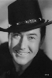

Also known as:Hell Town
Country:United States, 59 minutes
Spoken languages:English
Genres:Romance, Western
Director(s):Charles Barton
Writer(s):Robert Yost, Zane Grey, Stuart Anthony
Video Codec:Unknown
Number: 186


Certification:NR
Storyline:
Dare Rudd takes a shine to his cattleman cousin Tom's girlfriend who asks Tom to hire Dare to head the big cattle drive. Dare loses the money for the drive to cardsharps, but Tom wins it back, but Dare must save Tom's life.
Cast: 


Medium: VHS tape,
Comments: Part of: John Wayne Western Collection Volume II
Loaned: No
Aspect ratio: Unknown